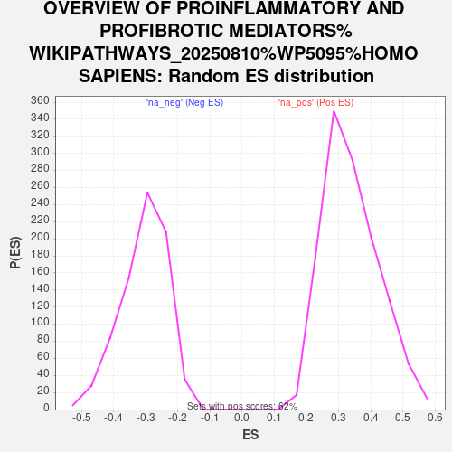

Profile of the Running ES Score & Positions of GeneSet Members on the Rank Ordered List
| Dataset | NHBE_SARSCoV2_ranks |
| Phenotype | NoPhenotypeAvailable |
| Upregulated in class | na_pos |
| GeneSet | OVERVIEW OF PROINFLAMMATORY AND PROFIBROTIC MEDIATORS%WIKIPATHWAYS_20250810%WP5095%HOMO SAPIENS |
| Enrichment Score (ES) | 0.8472497 |
| Normalized Enrichment Score (NES) | 2.4907925 |
| Nominal p-value | 0.0 |
| FDR q-value | 0.0 |
| FWER p-Value | 0.0 |
| SYMBOL | RANK IN GENE LIST | RANK METRIC SCORE | RUNNING ES | CORE ENRICHMENT | |
|---|---|---|---|---|---|
| 1 | CCL20 | 1 | 9.951 | 0.0726 | Yes |
| 2 | IL36G | 2 | 9.425 | 0.1414 | Yes |
| 3 | CXCL1 | 8 | 8.326 | 0.2018 | Yes |
| 4 | CXCL5 | 16 | 7.874 | 0.2587 | Yes |
| 5 | LIF | 20 | 7.689 | 0.3146 | Yes |
| 6 | IL6 | 26 | 7.388 | 0.3681 | Yes |
| 7 | IL1B | 28 | 7.157 | 0.4203 | Yes |
| 8 | CSF3 | 40 | 6.651 | 0.4680 | Yes |
| 9 | CSF2 | 47 | 6.102 | 0.5120 | Yes |
| 10 | CXCL2 | 49 | 6.003 | 0.5558 | Yes |
| 11 | MMP9 | 50 | 6.002 | 0.5996 | Yes |
| 12 | CXCL3 | 55 | 5.749 | 0.6413 | Yes |
| 13 | IL1A | 57 | 5.543 | 0.6817 | Yes |
| 14 | TNF | 80 | 4.793 | 0.7148 | Yes |
| 15 | NFKB1 | 107 | 4.220 | 0.7435 | Yes |
| 16 | VEGFA | 117 | 4.122 | 0.7728 | Yes |
| 17 | CXCL16 | 138 | 3.785 | 0.7988 | Yes |
| 18 | CXCL6 | 143 | 3.694 | 0.8254 | Yes |
| 19 | IL1RN | 370 | 2.353 | 0.8238 | Yes |
| 20 | IL33 | 476 | 2.098 | 0.8304 | Yes |
| 21 | CSF1 | 607 | 1.832 | 0.8329 | Yes |
| 22 | IL23A | 641 | 1.784 | 0.8432 | Yes |
| 23 | CCL28 | 737 | 1.642 | 0.8472 | Yes |
| 24 | IL36RN | 933 | 1.420 | 0.8414 | No |
| 25 | TGFB1 | 1866 | 0.869 | 0.7700 | No |
| 26 | MMP3 | 2253 | 0.718 | 0.7431 | No |
| 27 | CXCL17 | 2847 | 0.533 | 0.6976 | No |
| 28 | PPBP | 4679 | 0.184 | 0.5463 | No |
| 29 | AREG | 5577 | 0.056 | 0.4720 | No |
| 30 | TNFSF13 | 6112 | -0.008 | 0.4275 | No |
| 31 | CCL26 | 6764 | -0.089 | 0.3739 | No |
| 32 | CCL5 | 6912 | -0.108 | 0.3625 | No |
| 33 | SPP1 | 7833 | -0.245 | 0.2876 | No |
| 34 | TSLP | 8591 | -0.395 | 0.2274 | No |
| 35 | IL11 | 8908 | -0.465 | 0.2044 | No |
| 36 | CX3CL1 | 9015 | -0.489 | 0.1992 | No |
| 37 | IL18 | 9884 | -0.736 | 0.1322 | No |
| 38 | CTF1 | 10114 | -0.812 | 0.1191 | No |
| 39 | IL15 | 11162 | -1.330 | 0.0415 | No |
| 40 | CXCL14 | 12025 | -4.302 | 0.0011 | No |
